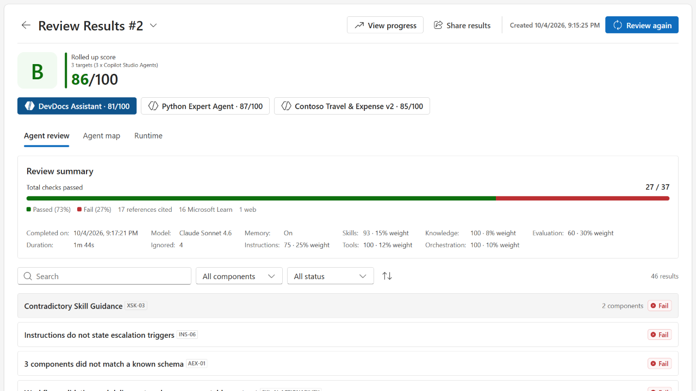
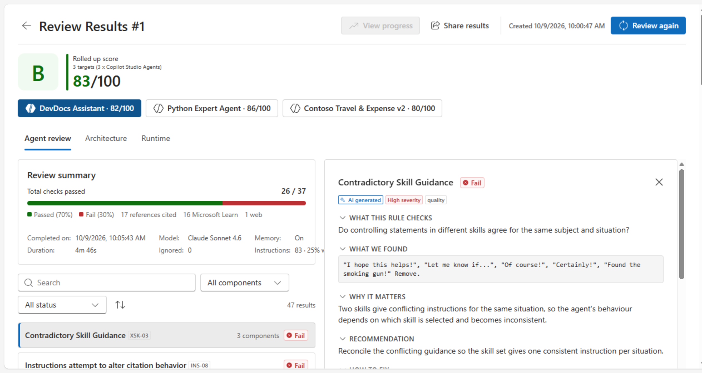
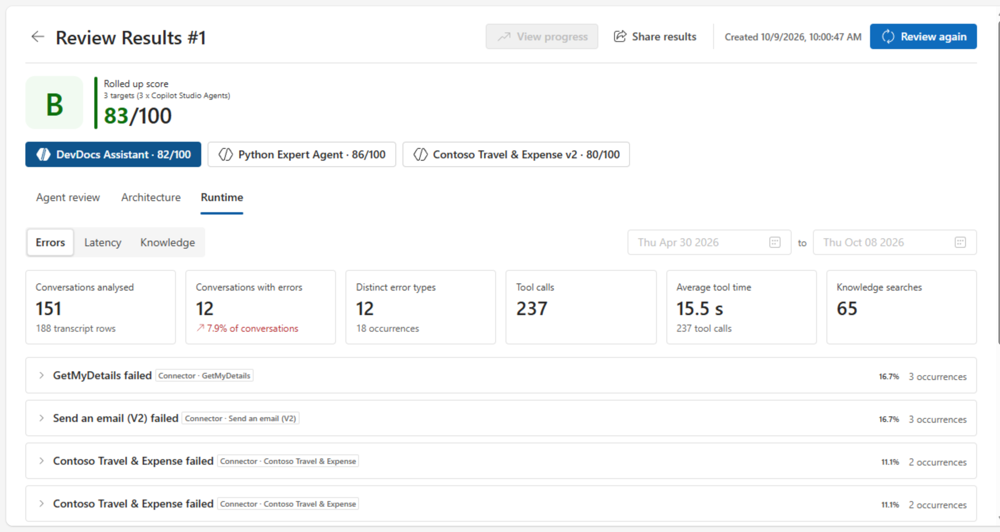
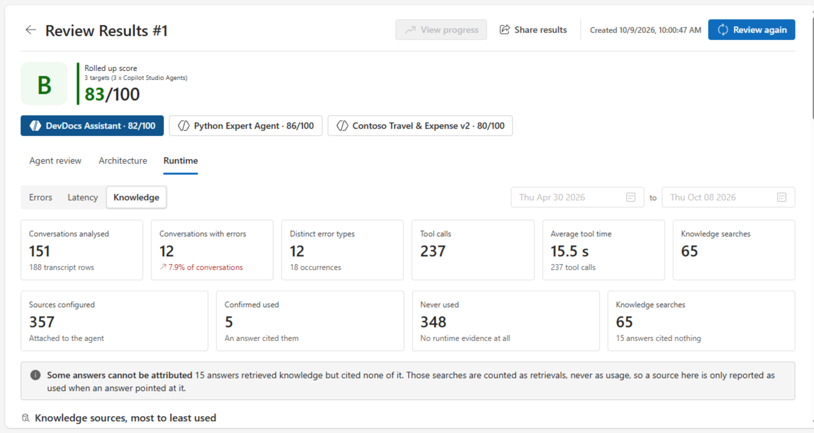
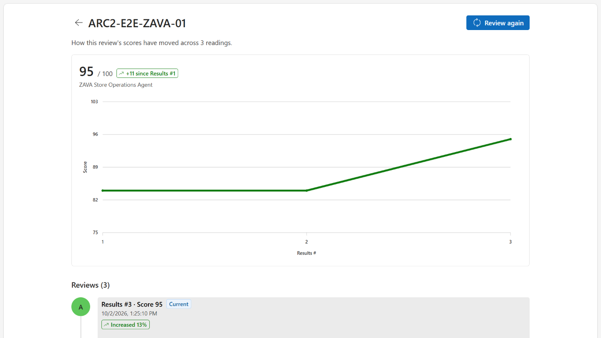
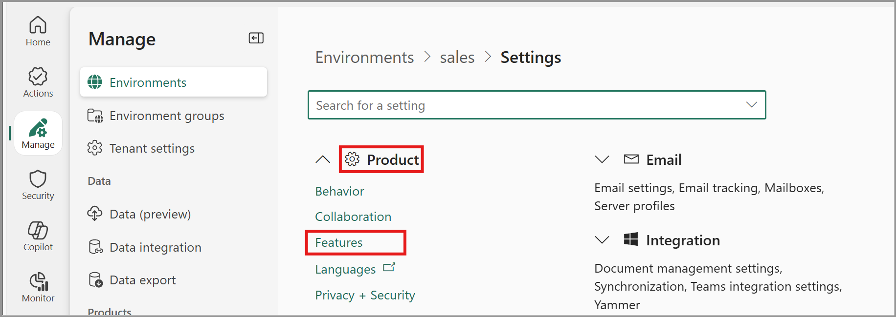
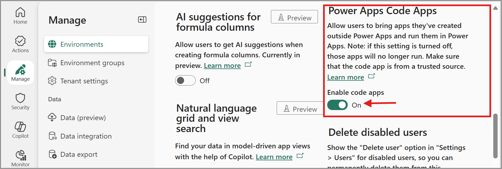
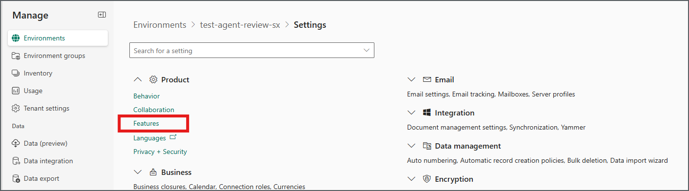
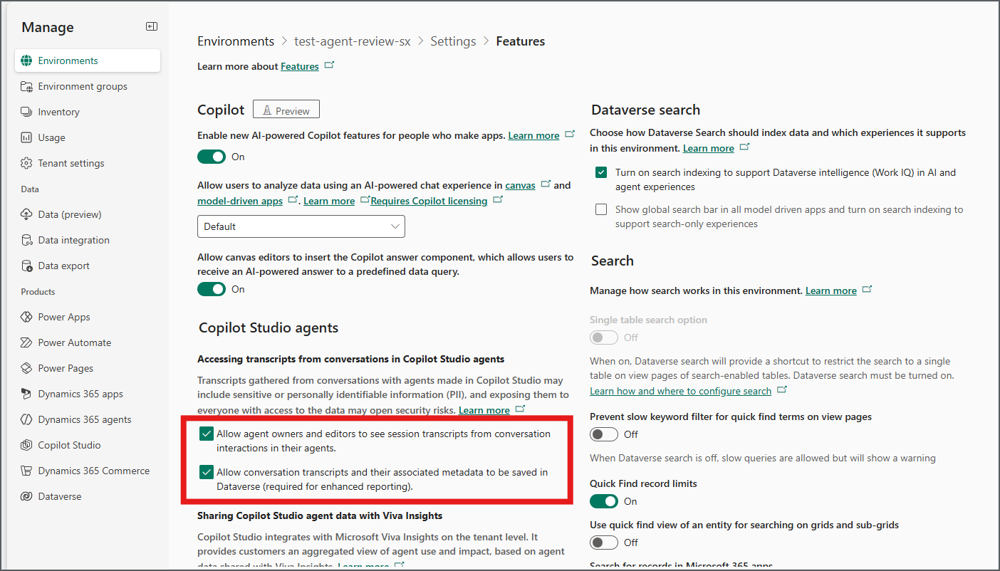

Copilot Studio
Copilot Studio tenant license, plus a Copilot Studio User License for each ARC user.
Microsoft Agent Review Program
An expert-guided review, debugging and optimization, and validation service for your Copilot Studio agents, declarative agents, plugins, and skills.
Nominate an agent Watch the overview

Taken from a sample review.




Three short sessions across four weeks.
Session 1
Install the Agent Review Center and get the data ready for the review.
Session 2
Conduct the agent review and walk through the risk-ranked findings and remediation backlog.
Between sessions 2 and 3
Implement the agreed fixes.
Session 3
Re-run the agent review and see the improvement against the baseline.
Beyond
Keep the tool and review your agents whenever you need to.
Required licenses, capacity and environment for Agent Review Center (ARC).
Copilot Studio tenant license, plus a Copilot Studio User License for each ARC user.
Power Apps Premium coverage for each ARC user (Premium license, pay-as-you-go, or App Pass).
Copilot Credits (Copilot Studio capacity pack or pay-as-you-go billing plan).
Standard release.
Agent Review Center (ARC) runs as a Power Apps code app and reads Copilot Studio agents and conversation transcripts from Dataverse.
| Setting | Where | Who can set it |
|---|---|---|
| Dataverse environment, standard release | Power Platform admin center (PPAC) > Manage > Environments | Power Platform admin |
| Copilot Credits allocated to the environment | PPAC > Licensing > Copilot Studio > Manage capacity | Power Platform admin |
| Enable code apps: On | PPAC > Environments > [env] > Settings > Product > Features > Code Apps | Environment System admin |
| Both transcript settings On: “Allow conversation transcripts and their associated metadata to be saved in Dataverse” and “Allow agent owners and editors to see session transcripts…” | PPAC > Environments > [env] > Settings > Product > Features > Copilot Studio agents | Environment System admin |
This guide gives the environment settings and security roles that Agent Review Center needs. Agent Review Center uses Power Apps Code Apps and Copilot Studio conversation transcripts.
Make sure that the tenant has these items. The tenant admin usually supplies them.
Learn more: Assign licenses and manage access to Copilot Studio · Microsoft Copilot Studio licensing guidance · Power Apps code apps overview
| Requirement | Where to configure it | Who can configure it | Why it is necessary |
|---|---|---|---|
| Target installation environment · Steps 1–2 | |||
| Dataverse environment, not preview | Power Platform admin center > Manage > Environments | Power Platform admin | Agent Review Center, Code Apps, and transcripts use Dataverse. |
| Copilot Credits allocated | Power Platform admin center > Licensing > Copilot Studio > Manage capacity | Power Platform admin | An environment can use prepaid credits only after you allocate them to it. |
| Power Apps Code Apps on | Power Platform admin center > Manage > Environments > Settings > Product > Features | Power Platform admin or environment admin | This setting lets the environment run code apps. |
| Agent environment · Steps 3–4 | |||
| Transcript recording on | Power Platform admin center > Manage > Environments > Settings > Product > Features > Copilot Studio agents | Power Platform admin or environment admin | This setting saves agent session transcripts and metadata in Dataverse. |
| Agent shared with reviewer | Copilot Studio > agent > Share | Agent owner. A System Administrator assigns roles. | Transcript access applies only to agents that the user creates or that are shared with the user. |
| Bot Transcript Viewer role | Dataverse environment security roles, or Copilot Studio agent sharing | System Administrator, or an admin with permission to manage environment roles | This role lets the user read conversation transcripts. The Environment Maker role does not give this access. |
| Target installation environment · Steps 5–6 | |||
| Solution installed, flows on | Power Apps > Solutions; Power Automate > Solutions > Cloud flows | System Administrator | A flow can run only if its connection references have valid connections. |
| App role and app sharing | Power Platform admin center > Environments > Users or Teams; Power Apps > Apps > Share | System Administrator; app owner | A user must have table access and a shared app to open Agent Review Center. |
Scope Target installation environment
Do these steps in the environment where you will install Agent Review Center.
Learn more: Create and manage environments · Power Apps preview program and early release cycle environments · Manage Copilot Studio credits and capacity
Scope Target installation environment
An environment setting controls Power Apps Code Apps.


Who can change this setting
A Power Platform admin or an environment admin must change this setting. To change many environments at the same time, use environment groups and rules.
Learn more: Power Apps code apps overview
Scope Agent environment
Do these steps in the environment of the agent that you review.
Transcript recording and transcript access are two different items:
Key difference
Transcript recording controls if the system saves conversation data.
Transcript access controls who can read this data.
In Power Platform admin center, do these steps:


Caution
Set the Dataverse transcript setting to on before the review period starts.
This setting controls if the system writes transcripts to the Dataverse transcript table. The system saves transcripts only for conversations that occur after you set it to on.
An environment admin can change this setting for one environment. A System Administrator can apply the environment group rule Accessing transcripts from conversations in Copilot Studio agents. This rule overrides the settings of each environment in the group.
Learn more: Control transcript access and retention
Scope Agent environment
In the agent environment, each reviewer must have three items:
A user must have the Environment Maker security role before you can share an agent with the user. This role includes the ChatBotReaders privilege. Users need this privilege to chat with agents in the environment.
The Environment Maker role does not give access to transcripts.
Bot Transcript Viewer is a Dataverse security role. It is not an environment feature setting. By default, only admins have this role.
Give this role to each user who must read conversation transcripts. Assign the role in the agent environment in one of these two ways:
Note
The Environment Maker role alone does not give access to transcripts.
If the agent content is sensitive, give transcript access only to users who have privacy training.
Learn more: Share agents with other users · Download conversation transcripts in Power Apps
Scope Target installation environment
Use an account that has the System Administrator role in the environment.
Before you start, make sure that the data policies of the environment allow all connectors that the solution uses. These connectors include Microsoft Dataverse. Code apps apply data policies when the app starts.
After the import, do these steps:
If each connection reference has a connection, the import gives each flow the status that it had at export. Thus, the flows are usually already on. To make sure, do these steps:
Note
The user who imports the solution becomes the owner of all its components. These components include flows and connection references. Select this user carefully.
Learn more: Data policies · Import a solution that contains cloud flows · Use a connection reference in a solution
Import failed? See the FAQ for known error messages and fixes.
Before you use Agent Review Center, make sure that:
Pick an agent in testing, pilot, or production with enough real traffic for the findings to tell you something. We will scope it with you before anything starts.
If you are working with an agent
Nominate your agentIf you are on a Microsoft team
Nominate a customer